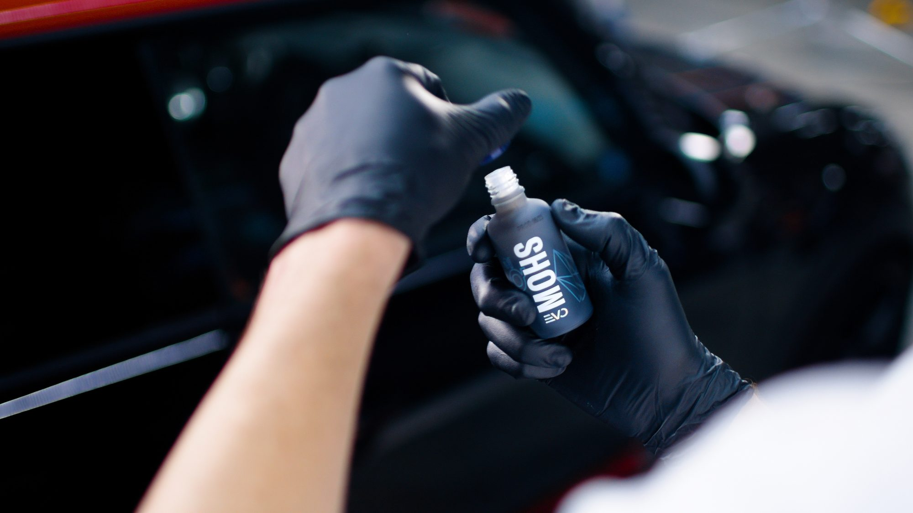
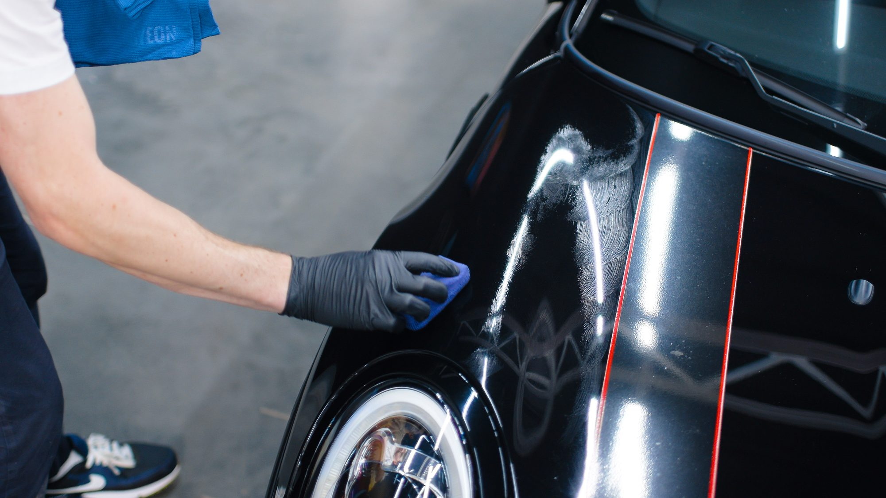

Keramikversiegelung in Pforzheim.
GYEON-Quartz-Versiegelung im zertifizierten Prime Studio. Für Fahrzeuge aus Pforzheim, Stuttgart, Karlsruhe und Weissach.
Termin anfragen →Schutz, der im Lack bleibt.
Eine Keramikversiegelung verbindet sich chemisch mit dem Klarlack. Das Ergebnis: eine Farbvertiefung und ein Tiefenglanz, den Wachs nicht erreicht, UV-Schutz für den Lack und eine Oberfläche, an der Schmutz kaum haftet. Ihr Fahrzeug lässt sich spürbar leichter und schneller waschen.
Entscheidend ist nicht das Produkt allein, sondern die Vorarbeit: Eine Versiegelung konserviert den Zustand darunter. Deshalb wird jeder Lack vor der Applikation mehrstufig aufbereitet.
Was drin ist.
-
Lackanalyse & Bestandsaufnahme
Schichtdickenmessung, Defektkartierung, Abstimmung des Aufbereitungsumfangs.
-
Mehrstufige Lackaufbereitung
Maschinelle Politur bis zur gewünschten Defektfreiheit, die Basis jeder Versiegelung.
-
GYEON-Quartz-Applikation
Versiegelung nach Prime-Studio-Standard, unter kontrollierten Studiobedingungen.
-
Dokumentation & Übergabe
Übergabeprotokoll mit Pflegehinweisen, damit der Schutz hält, was er soll.
-
Garantie
Herstellergestützte Garantie, die nur zertifizierte Studios anbieten dürfen.

So läuft es ab.
-
Analyse & Angebot
Besichtigung, Lackanalyse und ein Angebot, das zum Zustand des Fahrzeugs passt.
-
Aufbereitung
Handwäsche, Dekontamination und mehrstufige Politur, je nach vereinbartem Umfang.
-
Versiegelung
Applikation der GYEON-Quartz-Versiegelung, Schicht für Schicht, Panel für Panel.
-
Aushärtung & Übergabe
Kontrollierte Aushärtung im Studio, Endkontrolle und Übergabe mit Dokumentation.
Was es kostet.
Neuwagen · GYEON Infinite1.190 €
Pauschalpreis inklusive Politur und 5 Jahren Garantie. Neuwagen sind in der Regel nach zwei Tagen fertig.
Mit Lackaufbereitungab 1.690 €
Für Fahrzeuge mit Gebrauchsspuren: Lackanalyse, Dekontamination, mehrstufige Politur und Versiegelung. Mindestens vier Tage Arbeitszeit.
Hol- und Bringservice inklusive. Nach der Lackanalyse erhalten Sie ein verbindliches Angebot, ohne Überraschungen.
Termin anfragen →Ist Keramik überhaupt das Richtige für Sie?
Nicht für jedes Fahrzeug, nicht für jeden Alltag. Der Ratgeber beantwortet die häufigsten Fragen. Ehrlich, auch wenn die Antwort „nein" lautet.